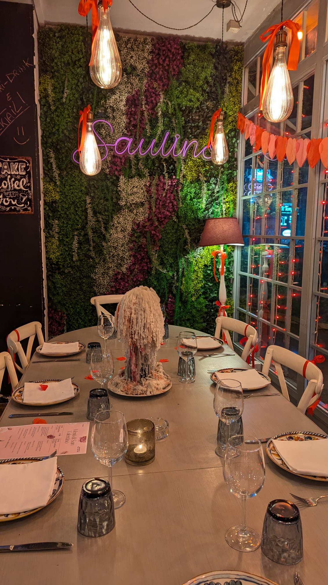
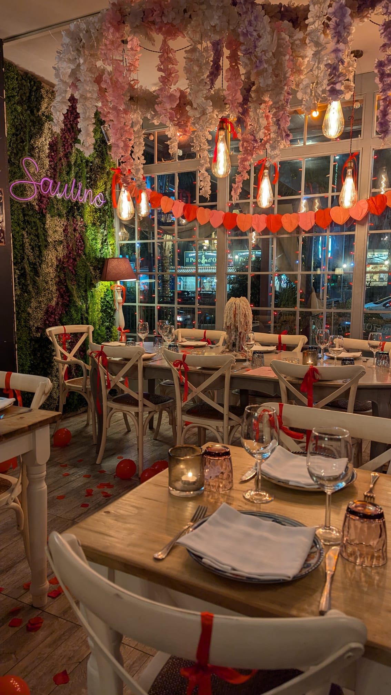
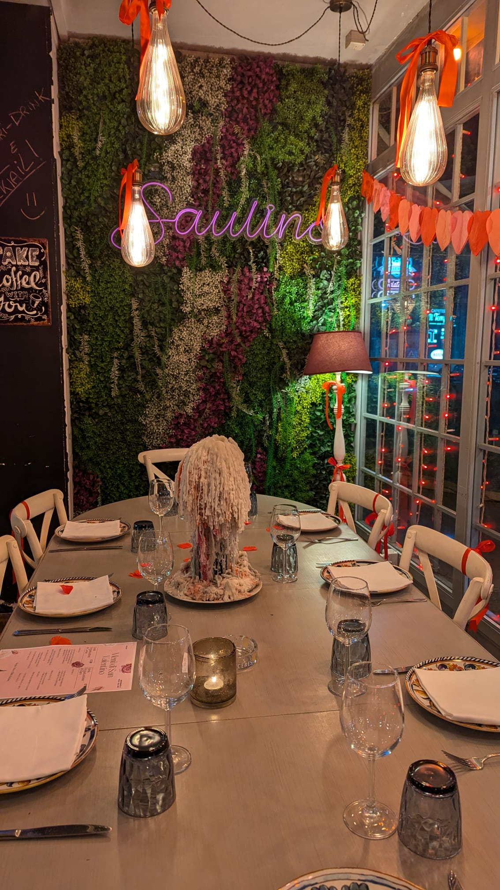
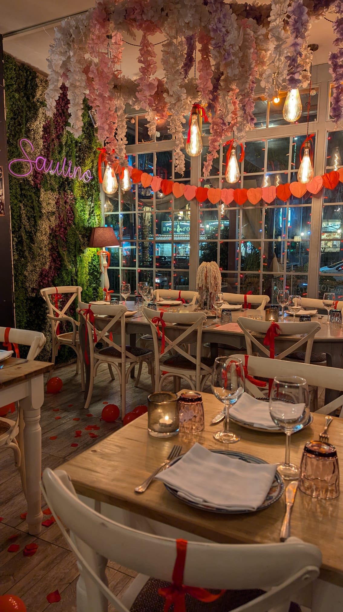
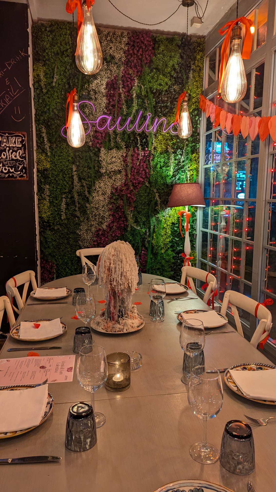
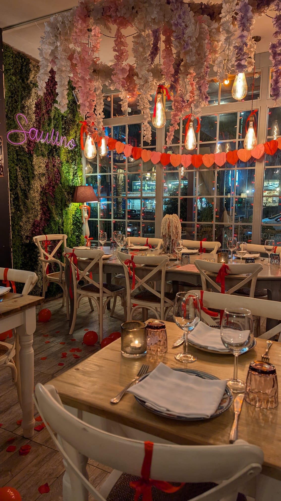
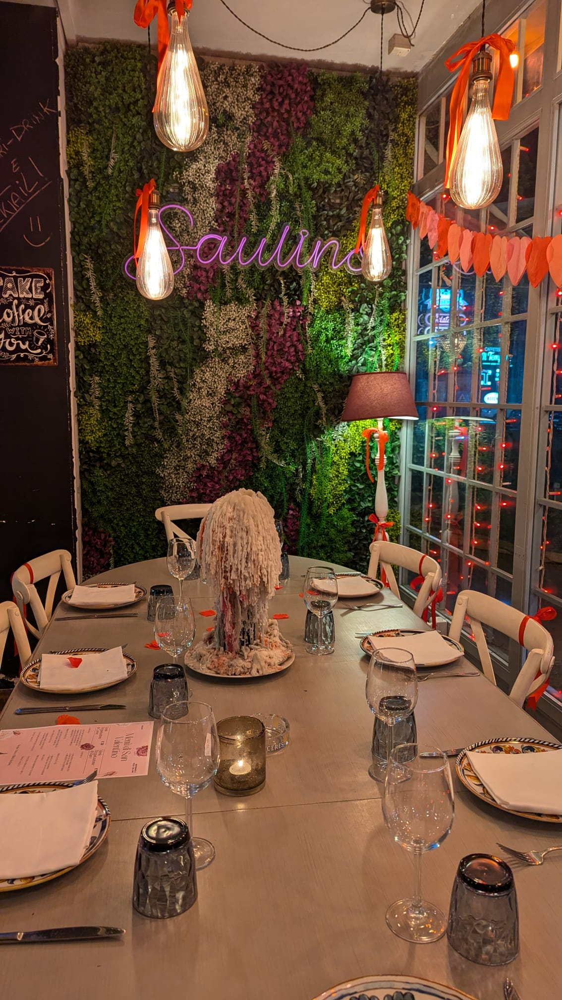
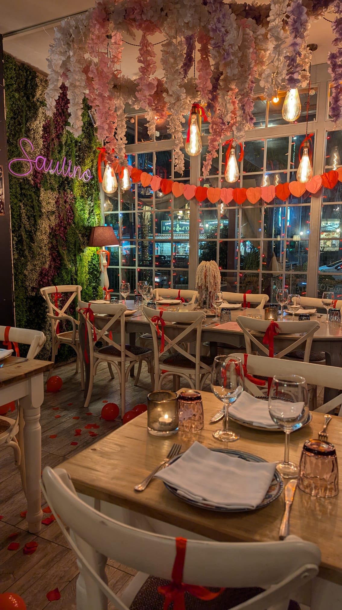

“Ogni piatto racconta una storia fatta di passione, tradizione e creatività . Da Saulino, ogni boccone è un viaggio sensoriale unico.”
Dal 1992, Saulino Ristorante e Pizzeria è sinonimo di qualità e accoglienza nel cuore di Napoli. La nostra filosofia si basa sull'utilizzo di ingredienti freschi e genuini, selezionati con cura e lavorati con maestria dai nostri chef. Che si tratti delle nostre celebri pizze artigianali o dei raffinati piatti di mare e terra, ogni portata rappresenta un omaggio alla tradizione culinaria partenopea, reinterpretata con estro e originalità per soddisfare anche i palati più esigenti.